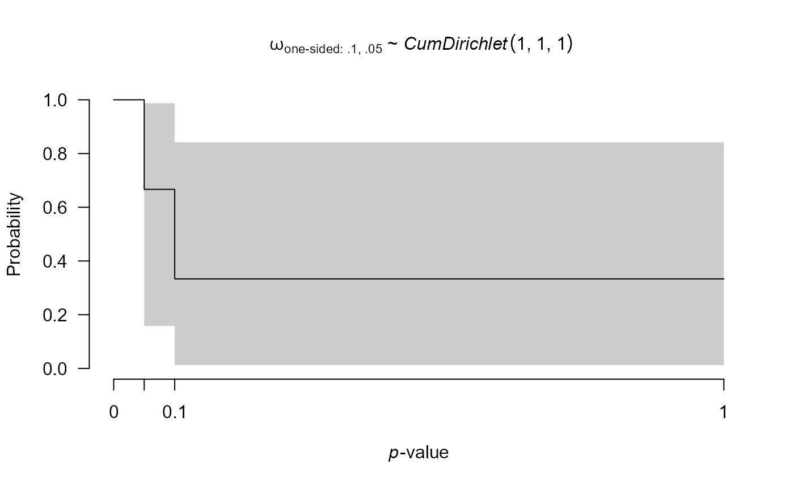

prior_weightfunction creates a prior distribution for fitting
a RoBMA selection model. The prior can be visualized by the plot function.
prior_weightfunction(distribution, parameters, prior_weights = 1)
| distribution | name of the prior distribution. The possible options are
|
|---|---|
| parameters | list of appropriate parameters for a given
|
| prior_weights | prior odds associated with a given distribution. The model fitting function usually creates models corresponding to all combinations of prior distributions for each of the model parameters, and sets the model priors odds to the product of its prior distributions. |
prior_weightfunction returns an object of class 'prior'.
p1 <- prior_weightfunction("one-sided", parameters = list(steps = c(.05, .10), alpha = c(1, 1, 1))) # the prior distribution can be visualized using the plot function # (see ?plot.prior for all options) plot(p1)